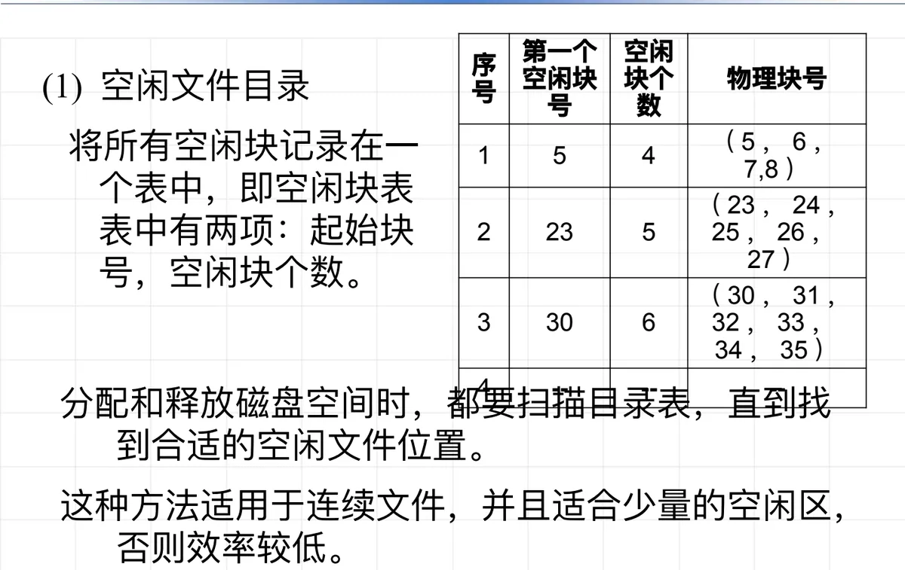

操作系统原理 · 第 9 章 文件系统
9.4 文件存储空间的管理
文件的数据是以「块」为单位存放在辅存上的，所以文件系统在运行中必须随时说得清：哪些块还空着、哪些块已经分出去、空闲的块又按什么结构组织起来。这一节先总览空闲块管理的任务与三种常用策略，再依次讲清空闲文件目录、空闲块链和位示图，最后落到位示图上一个具体的算法问题——怎样数出一个 32 位整数里有多少个 1。
文件存储设备是分成若干个大小相等的物理块，并以块为单位来交换信息的。于是空闲块管理要回答三件事：哪些块是空闲的；哪些块已经分配出去、已经分配出去的块被哪些文件占有；以及空闲块的组织、空闲块的分配与空闲块的回收。其中「某个块归哪个文件」属于文件与物理块之间的对应关系，由文件目录记录并解决（见 9.5 文件目录及其结构）；本节要讲的是另外两件——空闲块用什么结构组织起来，以及在这个结构上怎样分配、怎样回收。
常用的空闲块管理策略有三种：空闲文件目录、空闲块链和位示图。三者解决的是同一个问题，区别在于空闲块的信息记在哪里：记在一张表里、记在空闲块自己身上，还是记成一串二进制位。
1. 空闲文件目录
第一种做法把每个连续的空闲区当作一个「空闲文件」来看待，在目录表里为它登记一项：这个空闲区从哪里开始（第一个空闲块号）、一共占几个块（空闲块个数）。有这两项，这一段空闲区包含的全部物理块号就能算出来。分配和释放磁盘空间时，都要扫描这张目录表，直到找到合适的空闲文件位置。
| 序号 | 第一个空闲块号 | 空闲块个数 | 物理块号 |
|---|---|---|---|
| 1 | 5 | 4 | （5，6，7，8） |
| 2 | 23 | 5 | （23，24，25，26，27） |
| 3 | 30 | 6 | （30，31，32，33，34，35） |
| 4 | -- | -- | -- |
表中第 1 项的含义是：从 5 号块开始有 4 个连续的空闲块，也就是 5、6、7、8 号块；第 2、3 项依此类推。第 4 项是空的，说明这张目录表当前只登记了 3 个空闲区。这种组织方式一项就对应一段连续空间，所以它适用于连续文件；空闲区数量少的时候，扫描一遍目录表很快，做法简单可行，但空闲区一多，每次分配或释放都要从头扫描整张表去找合适的位置，效率就低了。

2. 空闲块链
第二种做法不再另建表格，而是把所有空闲块链成一个链：每个空闲块里存放一个指向下一个空闲块的指针，全部空闲块由此构成一个链表。因为链指针就放在空闲块自己内部，系统不需要额外的磁盘分配表，这部分空间就省下来了。每次申请空闲块，只要取出链表开头的那个空闲块即可。
分配和回收都在这条链上做：当申请分配存储空间时，按需要从链首依次取下几个物理块分配给文件；当回收存储空间时，把回收的空闲块依次链入空闲块链中。于是空闲块一旦被回收，立刻又变成链上的一个可分配节点。
空闲块链的优点是简单——链表上没有什么附加的元数据要维护，分配是摘下一个块、回收是挂上一个块。它的缺点是效率低：链指针散落在各个空闲块内部，要读到一个指针就得先把存放它的那个块读进来，因此链表操作需要很多 I/O 操作，一次涉及的空闲块越多，这笔开销越明显。
3. 位示图
第三种做法用一串二进制位来反映磁盘空间的分配使用情况：每个物理块对应其中的一位，已分配的块对应位为 1，否则为 0。这串位按固定的顺序与物理块号相对应，所以看一位的值，就知道它对应的那个块是「忙」还是「闲」。
两个基本操作由此变得非常轻巧。申请物理块时，在位示图中查找为 0 的位，由这一位的位置换算出对应的物理块号并返回，同时把这一位改为 1；归还物理块时，把对应的位重新置 0 即可。
位示图的好处是描述能力强，适合各种物理结构：它只记录「每个块忙不忙」，并不关心文件的数据块在磁盘上是怎么串起来的，因此连续文件、串联文件、索引文件都可以用它来管理空闲块。同时，一位只对应一个块，位示图本身占用的空间很小，通常可以整个放进主存，查找和修改都不必访问磁盘——这也正是它被广泛采用的原因。
4. 位示图中的计算：32 位整数中 1 的个数
位示图在实际系统中是按机器字来组织和处理的，一个 32 位整数就代表了 32 个物理块的忙闲状态。无论是分配时扫描为 0 的位，还是清点某一段磁盘空间里已经占用了多少块（数出其中 1 的个数，空闲块数自然也就知道了），都要反复做同一件事：数一个 32 位整数中有多少个 1。下面五种写法都出自课件，思路从直白到取巧，性能与可移植性各有取舍。
（1）循环法
最直白的做法是一位一位地看：把整数的最低位与 1 相与，是 1 就给计数器加一；然后把整数整体右移一位，继续判断，直到整数变成 0 为止。循环的次数取决于整数的有效位数（32 位整数最多循环 32 次），与其中有多少个 1 无关。
int BitCount1(unsigned int n)
{
unsigned int c =0 ; // 计数器
for (c =0; n; n >>=1) // 循环移位
c += n &1 ; // 如果当前位是1，则计数器加1
return c ;
}（2）快速循环法
改进的思路是不要逐位地扫，而是每循环一次就消掉一个 1。关键运算 n & (n - 1) 能把 n 中最低位的那个 1 清除掉：n - 1 会把最低位的 1 变成 0，并把它右边的 0 全部变成 1，再与原来的 n 相与，最低位的 1 以及它右边的位就都成了 0。于是每执行一次循环，n 中的 1 就少一个，循环次数正好等于 1 的个数——当 1 比较稀少时（位示图里空闲位稀疏的场合），它比逐位循环快得多。
int BitCount2(unsigned int n)
{
unsigned int c =0 ;
for (c =0; n; ++c)
n &= (n -1) ; // 清除最低位的1
return c ;
}（3）查表法
位示图的计算还可以拿空间换时间：一个 4 位的二进制数只有 16 种取值，每种取值里含几个 1 完全可以预先写死成一张小表。于是每次取出 n 的最低 4 位（n & 0xf）作下标去查表，把查到的值累加，再把 n 右移 4 位，直到 n 为 0 为止。这样 32 位整数最多查 8 次表，比逐位判断少了大量分支；代价是这张 16 项的表要一直备着。
int BitCount4(unsigned int n)
{
unsigned int table[16] = {
0, 1, 1, 2, 1, 2, 2, 3,
1, 2, 2, 3, 2, 3, 3, 4} ;
unsigned int count =0 ;
while (n) {
count += table[n & 0xf] ;
n >>=4 ;
}
return count ;
}表中这 16 个数字正是 0～15 各自含 1 的个数：0 含 0 个，7（二进制 0111）含 3 个，15（二进制 1111）含 4 个，如此等等。查表法就是用这 16 个现成的答案换掉了循环里的判断。
（4）HAKMEM 算法
HAKMEM 是 MIT 人工智能实验室一份技术备忘录（Memo 239）的编号，其中收录了大量这类位运算技巧。这个算法把「数 1」化成几条减、加、与和移位：第一条语句先把 n 按 3 位一段切开，算出每一段里有几个 1（一段最多 3 个 1，两位就装得下，所以结果里每 3 位存放一段的计数）；第二条语句把相邻两段的计数两两相加，整理成每隔 6 位一段的计数，每段的值都不超过 6；最后一句对 63 取余——由于 26 即 64 除以 63 余 1，对 63 取余恰好等价于把所有各段的计数加起来，得到的正是整个整数中 1 的个数。它没有循环、没有分支、也不查表，全部计算只有十来条指令。
int BitCount4(unsigned int n)
{
unsigned int tmp = n
- ((n >>1) &033333333333)
- ((n >>2) &011111111111);
tmp = ((tmp + (tmp >>3)) & 030707070707);
return (tmp%63);
}课件专门注明：代码中使用的是八进制数，11 位八进制数对应 33 位二进制数。掩码比 32 位整数多出的那一位在高位上，对 32 位整数来说那里始终是 0，不影响结果。
（5）gcc 内建的位操作辅助函数
前面四种写法都要自己动手算。如果编译器是 gcc（clang 等也兼容），这类「数位」的操作可以直接调用内建函数：由编译器决定是翻译成目标机器上的专用指令，还是生成一段高效的指令序列，必要时再调用库函数兜底，既不用手写循环，也不用维护查表数组。
__builtin_ffs(x)：返回 x 中最后一个为 1 的位是从右向左的第几位，
如 __builtin_ffs(0x789)=1，__builtin_ffs(0x78c)=3，
__builtin_ffs(0x0)=0
__builtin_ctz(x)：x 末尾 0 的个数。x=0 时结果未定义。
__builtin_clz(x)：x 前导 0 的个数。x=0 时结果未定义。
__builtin_popcount(x)：x 中 1 的个数。四个函数里前三个给出的是「位的位置」，只有最后一个才是计数。ffs 找的是最低位的 1 出现在从右向左的第几位，所以 0x789 的最低位就是 1，返回 1；0x78c 的低两位是 0、第三位是 1，返回 3；而 0 里根本没有为 1 的位，约定返回 0。ctz 数的是末尾连续 0 的个数，它和 ffs 描述的是同一个位置，只是计数从 0 开始；clz 从最高位往低位数 0，一直数到遇到第一个 1 为止。ctz 与 clz 都要求 x 不为 0，因为全 0 时「第一个 1 在哪里」没有意义——拿位示图做位扫描时要特别留心这一点。popcount 才是本节要的「数 1」：__builtin_popcount(x) 一行就顶得上前面四种算法。
本节小结
- 文件存储空间以物理块为单位分配和回收；管理要解决「哪些块空闲、空闲块怎样组织、怎样分配与回收」，「已分配的块归哪个文件」则由文件目录（9.5 节）记录；
- 空闲文件目录把每个连续空闲区登记成一项——第一个空闲块号加空闲块个数，分配与回收都要扫描目录表；适合连续文件、适合空闲区不多的场合，空闲区一多效率就低；
- 空闲块链把空闲块本身串成一条链，指针存在块内，不需要额外的磁盘分配表、节省空间，分配从链首取块、回收再链回链上；优点是简单，缺点是链表操作要读块内的指针，I/O 次数多；
- 位示图用一位表示一个物理块的忙闲（已分配为 1，空闲为 0），申请时找 0 位、归还时置 0；描述能力强，连续、串联、索引等各种物理结构都能用，适用范围最广；
- 位示图按机器字处理，核心操作是数 32 位整数中 1 的个数：循环法逐位统计；快速循环法用
n & (n - 1)每次消掉一个 1，循环次数等于 1 的个数；查表法每 4 位查一次预先算好的 16 项小表；HAKMEM 用减法、按位与和取余在常数条指令内完成；gcc 的__builtin_popcount等内建函数则由编译器直接给出高效实现。